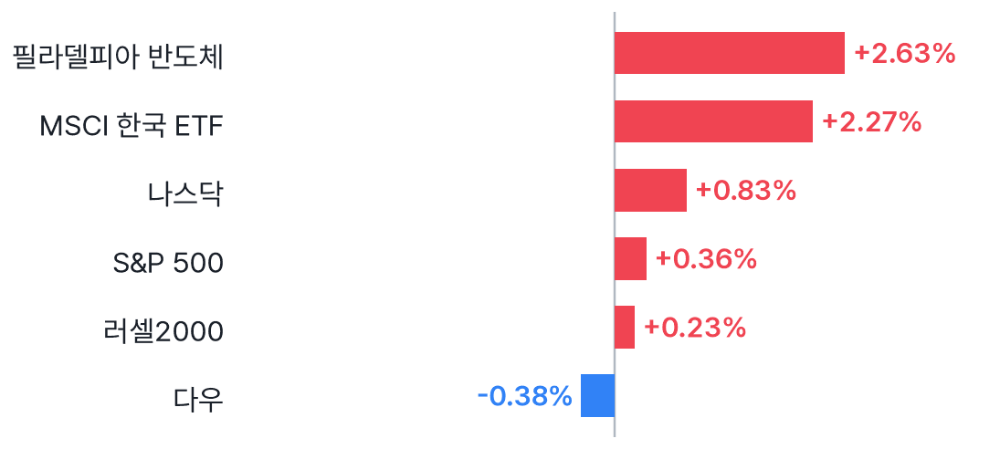
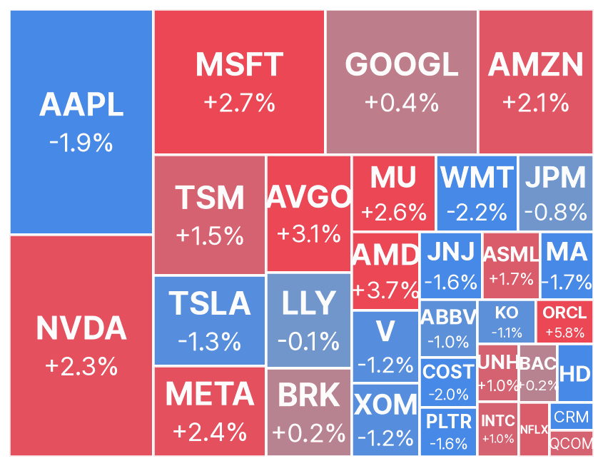
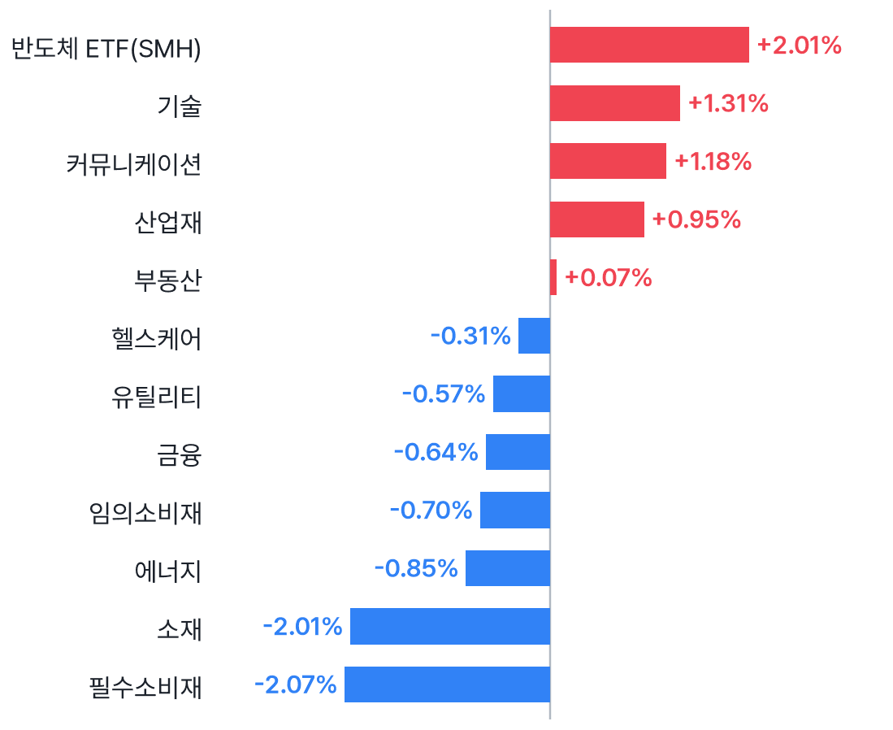
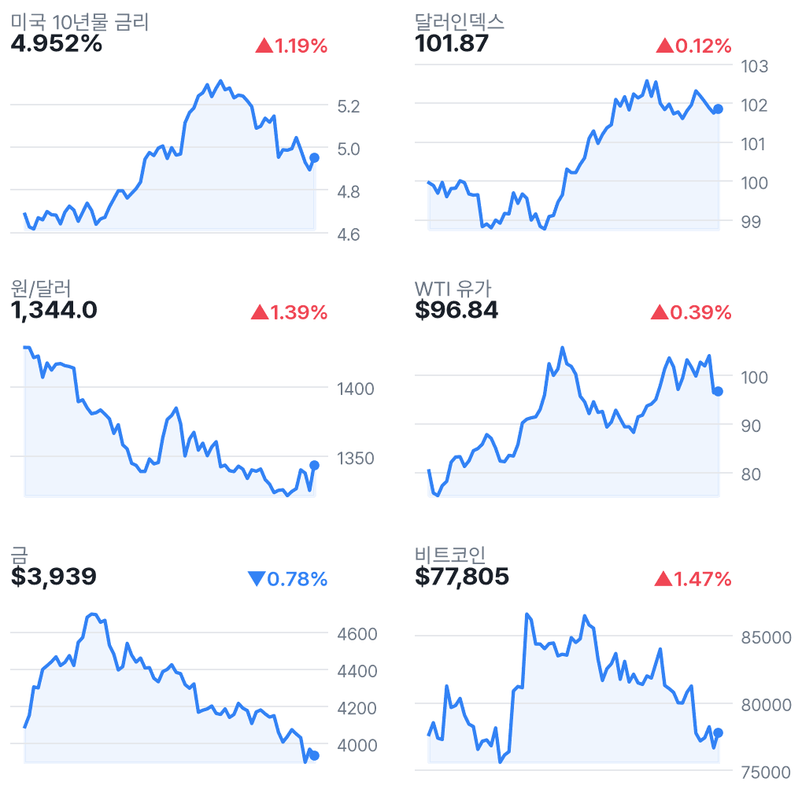
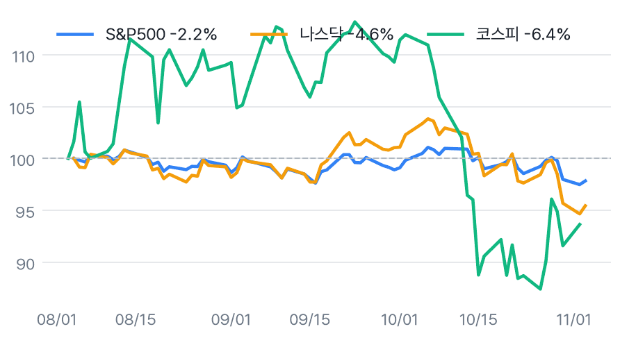

나스닥 0.83%↑, 반도체 반등…중간선거는 변수
✅ 핵심 요약
- 나스닥 +0.83%·반도체 +2.63%, AI 대형주 반등에도 다우 -0.38%로 혼조.
- 장후 AMD +8.28%·아리스타 +14.18%; 실적 발표 뒤 AI 인프라 관련주 강세.
- EWY +2.27%는 국내 반등에 우호적이나, 원/달러 1,344.0원·미 10년물 4.952%는 부담.
- 전일 국내장은 코스피 -3.59%·코스닥 -4.08%; 오늘은 미국 반도체 반등의 전이 여부 주목.
📊 주요 지표
S&P 500
7,568.92
▲0.36%
나스닥
25,372.01
▲0.83%
다우
51,786.72
▼0.38%
필라델피아 반도체
10,600.40
▲2.63%
VIX
20.83
▼1.51%
미국 10년물
4.952%
▲1.19%
원/달러
1,344.0
▲1.39%
달러인덱스
101.87
▲0.12%
WTI
$96.84
▲0.39%
금
$3,939
▼0.78%
비트코인
$77,805
▲1.47%
EWY(한국 ETF)
$155.06
▲2.27%
🧭 시장 해석
미국장은 AI·반도체주 반등으로 나스닥 +0.83%, S&P500 +0.36%를 기록했다. 반면 애플 -1.90%, 필수소비재 -2.07% 등 업종별 차별화가 뚜렷했다. 장후 AMD는 데이터센터 매출 호조 보도 속 +8.28%로 상승했다.
EWY +2.27%와 반도체 강세는 국내장에 우호적 신호다. 다만 원/달러 1,344.0원과 미 10년물 4.952%, 아직 확인되지 않은 중간선거 결과가 변수다. 반도체지수는 1개월 -19.53%여서 하루 반등만으로 추세 전환을 단정하기 어렵다.
정규장 반등과 장후 실적 반응은 구분
정규장에서는 엔비디아 +2.29%·AMD +3.65%·브로드컴 +3.07%로 반도체가 반등했다. 마감 후 실적 발표 뒤 AMD +8.28%·아리스타 +14.18%가 추가로 상승했다. 장후 반응이 정규장 상승을 일으킨 것은 아니며, 수집 시점 이후 변동 가능성도 있다.
국내 지수는 기준일에 주의
국내 전일 마감은 네이버 기준 코스피 5,648.79(-3.59%)·코스닥 704.39(-4.08%)다. Yahoo 국내 지수는 11월 2일 값으로 하루 뒤처져 전일 종가로 사용하지 않았다. EWY의 상승은 반등 참고 신호이지 코스피 상승을 보장하지 않는다.
📈 차트
미국 주요 지수 등락률

2026-11-03 미국 정규장 종가 기준 · EWY는 코스피 선행 지표로 참고
미국 빅테크·대형주 히트맵

타일 크기 = 시가총액, 색 = 등락률 (빨강 상승 · 파랑 하락)
미국 섹터 ETF 등락률

SPDR 섹터 ETF + 반도체(SMH)
금리·환율·원자재 (3개월)

우측 상단 = 전일 대비
3개월 추세 비교 (시작=100)

미국 vs 한국 지수 흐름
🏦 애널리스트 · 리서치
- AAPL — JP모건 목표가 $360→$355 하향Overweight 의견은 유지했다는 내용. 목표가 하향과 투자의견 하향은 구분해야 한다.
- AAPL — UBS 목표가 $296→$340 상향Neutral 의견은 유지했다는 내용. JP모건의 하향과 대비돼 애플에 대한 평가가 엇갈린다.
- PLTR — 씨티 목표가 $250→$265 상향Buy 의견을 유지했다는 내용. 주가는 -1.65%로, 목표가 상향과 당일 시장 반응이 달랐다.
- AMZN — Freedom Broker 목표가 $255→$330 상향Buy 의견을 유지했다는 내용. 아마존은 정규장 +2.06%로 마감했다.
-
리포트 제목에서 분기 실적의 컨센서스 상회와 업종 내 최선호주라는 의견을 제시했다.
미국 대형주 의견·목표가 변경 20건 (Yahoo)
- 목표가 하향AAPL · JP MorganOverweight · 목표가 $360 → $355 · 11/04 03:16 KST
- 목표가 상향AAPL · UBSNeutral · 목표가 $296 → $340 · 11/04 00:48 KST
- 목표가 상향AAPL · Argus ResearchBuy · 목표가 $375 → $400 · 11/03 23:17 KST
- 목표가 상향AAPL · BarclaysUnderweight · 목표가 $245 → $261 · 11/03 23:12 KST
- 목표가 하향AAPL · TD CowenBuy · 목표가 $400 → $390 · 11/03 23:09 KST
- 목표가 상향AAPL · DA DavidsonNeutral · 목표가 $270 → $295 · 11/03 22:59 KST
- 목표가 상향AAPL · BairdOutperform · 목표가 $330 → $340 · 11/03 20:57 KST
- 목표가 하향AAPL · Morgan StanleyOverweight · 목표가 $355 → $350 · 11/03 19:37 KST
- 목표가 상향ABBV · UBSNeutral · 목표가 $275 → $295 · 11/03 06:20 KST
- 목표가 상향ABBV · Leerink PartnersOutperform · 목표가 $309 → $342 · 11/03 05:02 KST
- 목표가 상향AMZN · Freedom BrokerBuy · 목표가 $255 → $330 · 11/04 04:59 KST
- 목표가 하향BAC · UBSBuy · 목표가 $67 → $62 · 11/03 07:07 KST
- 목표가 상향JPM · UBSBuy · 목표가 $395 → $400 · 11/03 06:58 KST
- 목표가 상향PLTR · CitigroupBuy · 목표가 $250 → $265 · 11/04 03:54 KST
- 목표가 상향PLTR · Truist SecuritiesBuy · 목표가 $223 → $250 · 11/04 01:59 KST
- 목표가 상향PLTR · RBC CapitalUnderperform · 목표가 $90 → $130 · 11/03 22:55 KST
- 목표가 상향PLTR · Morgan StanleyEqual-Weight · 목표가 $205 → $233 · 11/03 20:22 KST
- 목표가 상향PLTR · Piper SandlerOverweight · 목표가 $231 → $235 · 11/03 18:05 KST
- 목표가 하향QCOM · BernsteinMarket Perform · 목표가 $165 → $155 · 11/03 03:43 KST
- 목표가 상향XOM · UBSBuy · 목표가 $199 → $213 · 11/03 06:53 KST
국내 종목분석 리포트 30건 (네이버 리서치)
-
미래에셋증권 · 2026-11-03
-
한화투자증권 · 2026-11-03
-
한화투자증권 · 2026-11-03
-
DS투자증권 · 2026-11-03
-
하나증권 · 2026-11-03
-
하나증권 · 2026-11-03
-
하나증권 · 2026-11-03
-
하나증권 · 2026-11-03
-
하나증권 · 2026-11-03
-
하나증권 · 2026-11-03
-
유안타증권 · 2026-11-03
-
유안타증권 · 2026-11-03
-
유안타증권 · 2026-11-03
-
유안타증권 · 2026-11-03
-
유안타증권 · 2026-11-03
-
미래에셋증권 · 2026-11-03
-
대신증권 · 2026-11-03
-
대신증권 · 2026-11-03
-
대신증권 · 2026-11-03
-
대신증권 · 2026-11-03
-
대신증권 · 2026-11-03
-
대신증권 · 2026-11-03
-
대신증권 · 2026-11-03
-
대신증권 · 2026-11-03
-
미래에셋증권 · 2026-11-03
-
미래에셋증권 · 2026-11-03
-
iM증권 · 2026-11-03
-
유진투자증권 · 2026-11-03
-
유진투자증권 · 2026-11-03
-
유진투자증권 · 2026-11-03
국내 투자전략 리포트 8건 (네이버 리서치)
-
하나증권 · 2026-11-03
-
신한투자증권 · 2026-11-03
-
대신증권 · 2026-11-03
-
대신증권 · 2026-11-03
-
대신증권 · 2026-11-03
-
대신증권 · 2026-11-03
-
유진투자증권 · 2026-11-03
-
IBK투자증권 · 2026-11-03
국내 시황정보 리포트 8건 (네이버 리서치)
-
신한투자증권 · 2026-11-03
-
DS투자증권 · 2026-11-03
-
유안타증권 · 2026-11-03
-
신한투자증권 · 2026-11-03
-
다올투자증권 · 2026-11-03
-
신한투자증권 · 2026-11-03
-
iM증권 · 2026-11-03
-
유진투자증권 · 2026-11-03
국내 경제분석 리포트 3건 (네이버 리서치)
-
한화투자증권 · 2026-11-03
-
키움증권 · 2026-11-03
-
iM증권 · 2026-11-03
📰 주요 뉴스
-
반도체 반등이 지수를 지지했지만 업종 전반의 상승은 아니었다.CNBC
-
AI 인프라 수요를 가늠할 실적 신호로 국내 반도체에도 중요하다.CNBC
-
의회 구도와 정책 변화 가능성이 장중 변동성 변수다.CNBC
-
기술주 반등과 별개로 개별 기업·자금조달 위험은 남아 있다.WSJ Markets
미국·글로벌 헤드라인 18건
-
CNBC · 11/04 06:56
-
WSJ Markets · 11/04 06:46
-
MarketWatch · 11/04 06:30
-
WSJ Markets · 11/04 06:30
-
MarketWatch · 11/04 06:27
-
WSJ Markets · 11/04 06:23
-
WSJ Markets · 11/04 06:21
-
CNBC · 11/04 06:20
-
WSJ Markets · 11/04 06:19
-
CNBC · 11/04 06:16
-
CNBC · 11/04 06:15
-
Reuters · 11/04 06:15
-
MarketWatch · 11/04 06:13
-
MarketWatch · 11/04 06:04
-
WSJ Markets · 11/04 06:00
-
CNBC Markets · 11/04 05:52
-
The Economist · 11/04 05:48
-
Grocery Dive · 11/04 05:46
국내 헤드라인 18건
-
연합뉴스TV · 11/04 06:57
-
연합인포맥스 · 11/04 06:50
-
KBS 뉴스 · 11/04 06:47
-
뉴시안 · 11/04 06:43
-
글로벌이코노믹 · 11/04 06:37
-
연합뉴스 · 11/04 06:30
-
뉴스핌 · 11/04 06:29
-
디지털데일리 · 11/04 06:28
-
연합뉴스 · 11/04 06:20
-
아시아경제 · 11/04 06:11
-
서울신문 · 11/04 06:10
-
블루밍비트 · 11/04 06:08
-
이투데이 · 11/04 06:07
-
연합뉴스 · 11/04 06:05
-
연합뉴스 · 11/04 06:00
-
연합뉴스 · 11/04 06:00
-
연합뉴스 · 11/04 06:00
-
연합뉴스 · 11/04 06:00
애널리스트 관련 헤드라인 12건
-
KuCoin · 11/04 04:23
-
TradingView · 11/04 04:20
-
TradingView · 11/04 04:20
-
TradingView · 11/04 04:20
-
TradingView · 11/04 04:20
-
TradingView · 11/04 04:20
-
TradingView · 11/04 04:20
-
MarketBeat · 11/04 02:22
-
MarketBeat · 11/04 00:25
-
Investing.com · 11/03 22:47
-
Benzinga · 11/03 22:43
-
Benzinga · 11/03 22:39
🗓️ 일정
경제지표·이벤트 (KST)
- 00:00🇺🇸 미국 JOLTS Job Openings11/04 · 중요도 중간 · 예상 7.15M · 이전 7.08M
- 00:16🇺🇸 미국 Congressional Elections11/04 · 중요도 높음
- 00:00🇺🇸 미국 ISM Services PMI11/05 · 중요도 중간 · 예상 54.8 · 이전 54.9
어젯밤 장 마감 후 실적 (미국)
- AMD Advanced Micro Devices, Inc.장후시총 $762.1B · EPS 예상 $1.68 · 시간외 ▲8.28%
- AMGN Amgen Inc.장후시총 $251.6B · EPS 예상 $5.74 · 시간외 ▼1.79%
- ANET Arista Networks, Inc.장후시총 $207.0B · EPS 예상 $0.99 · 시간외 ▲14.18%
- BKNG Booking Holdings Inc.장후시총 $115.5B · EPS 예상 $4.48 · 시간외 ▼1.98%
- SU Suncor Energy Inc.장후시총 $88.2B · EPS 예상 $2.35 · 시간외 ▲0.36%
- ITUB Itau Unibanco Banco Holding SA장후시총 $79.1B · EPS 예상 $0.22 · 시간외 ▼0.14%
다음 미국 세션 실적 예정
- TM Toyota Motor Corp Ltd Ord시간미정시총 $255.2B · EPS 예상 -
- ARM Arm Holdings plc장후시총 $209.4B · EPS 예상 $0.22
- MCD McDonald's Corporation장전시총 $188.0B · EPS 예상 $3.36
- NVO Novo Nordisk A/S장전시총 $179.1B · EPS 예상 $0.81
- QCOM QUALCOMM Incorporated장후시총 $170.2B · EPS 예상 $1.46
- UBER Uber Technologies, Inc.장전시총 $136.3B · EPS 예상 $0.94
- MCK McKesson Corporation장후시총 $116.4B · EPS 예상 $10.69
- CVS CVS Health Corporation장전시총 $113.2B · EPS 예상 $1.62
- EMR Emerson Electric Company장전시총 $92.6B · EPS 예상 $1.85
- MELI MercadoLibre, Inc.장후시총 $85.0B · EPS 예상 $9.41
- MSI Motorola Solutions, Inc.장후시총 $80.6B · EPS 예상 $3.99
- DDOG Datadog, Inc.장전시총 $77.6B · EPS 예상 $0.18
- APP Applovin Corporation장후시총 $76.6B · EPS 예상 $3.94
- MFC Manulife Financial Corp장후시총 $74.8B · EPS 예상 $0.83
👀 체크포인트
- 오늘 장중미 중간선거 개표·의회 구도 확인; 결과를 선반영해 단정하지 않기
- 오늘 밤미국 장전 우버·맥도날드·노보노디스크 실적 예정
- 내일 00:00미국 ISM 서비스업 PMI — 예상 54.8, 이전 54.9
- 내일 새벽미국 장후 ARM·퀄컴 실적 예정 — AI·반도체 실적 반응 점검